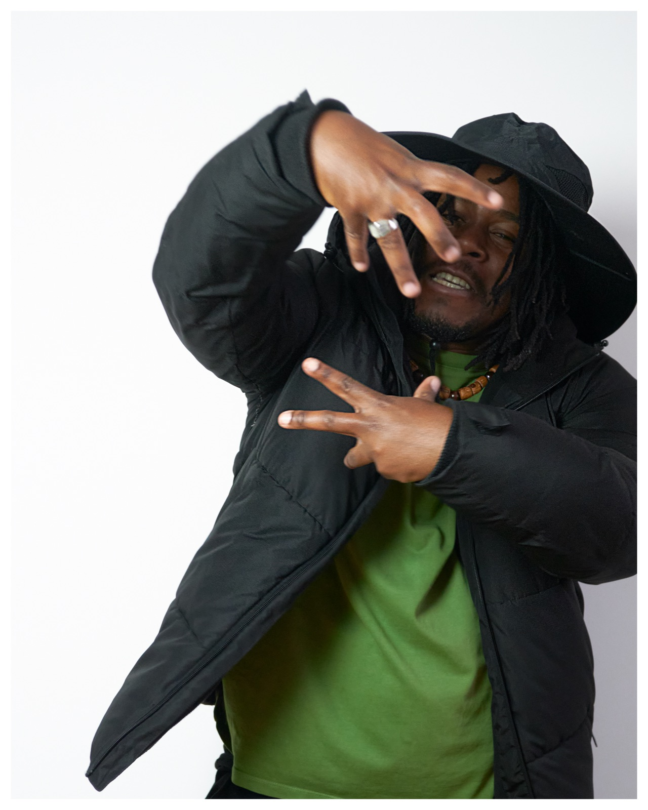
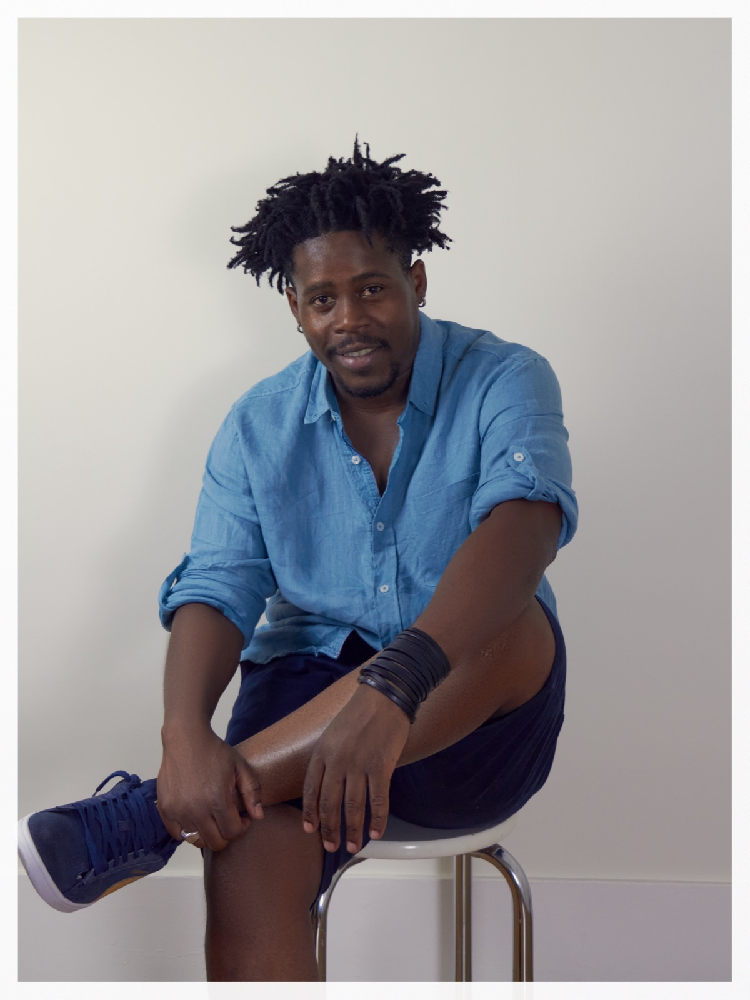
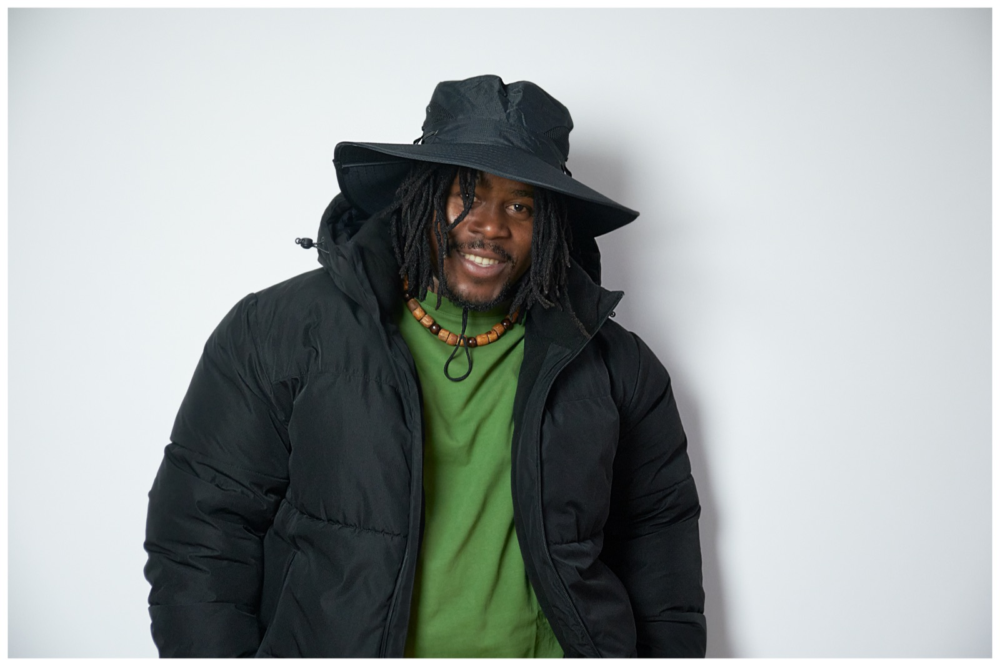

Journey & biography


Régis Tsoumbou bakana discovered hip-hop culture in 2008 in Gabon, his home country. He immediately became passionate about street dance and trained first as a self-taught dancer, practicing in his neighborhood with other street dancers through battles, inter-neighborhood competitions and street events.
He took part in the emergence of hip-hop dance in Gabon and joined his first company in 2008, NO FEAR GABON, with which he competed in numerous competitions.
Hip-hop opened the door to dance and its many forms. In 2011, he took his first professional steps in Ouagadougou, Burkina Faso, when he joined COLLECTIF JUMP DANCE. He then decided to set aside his degree in banking and insurance to devote himself fully to dance.
That same year, he met choreographer Irène Tassembedo at a performance by the collective at the École de Danse Afro-Contemporaine Irène Tassembedo (EDIT). He then intensified his training at EDIT while taking part in numerous workshops and classes.
This training broadened his knowledge of dance, introduced him to a wide range of contemporary dance forms, and expanded his artistic outlook, with hip-hop as the foundation of his physical language.
Alongside his training at EDIT, from which he graduated in 2017, he joined Compagnie Irène Tassembedo and became a performer in several productions.
Throughout his career, he has also worked with choreographers and artists such as Chantal Loïal, Delphine Caron, Jean-Philippe Coste, Delphine Bachacou, Julyen Hamilton, Régine Chopinot, DeLaVallet Bidiefono and Christiane Emmanuel.
These experiences have enriched his physical language through a blending of practices and continue to broaden his artistic knowledge.
In 2019, he earned a Bachelor's degree (Licence 3) from the UFR Arts, Philosophie et Esthétique department, Dance Research track, at Université Paris 8 Vincennes-Saint-Denis, France.
His artistic and academic path now allows him to pursue research into his own choreographic voice, at the crossroads of hip-hop and contemporary dance.
In 2022, he joined the dance company DK-BEL, directed by Sophie Bulbulyan and Emmanuel Siopatis, as a dancer and choreographer.

Passing it on, sharing, exploring
“My vision of dance is to pass on what I know to as many people as possible, to share my experience, and to let everyone explore their own relationship with movement.”